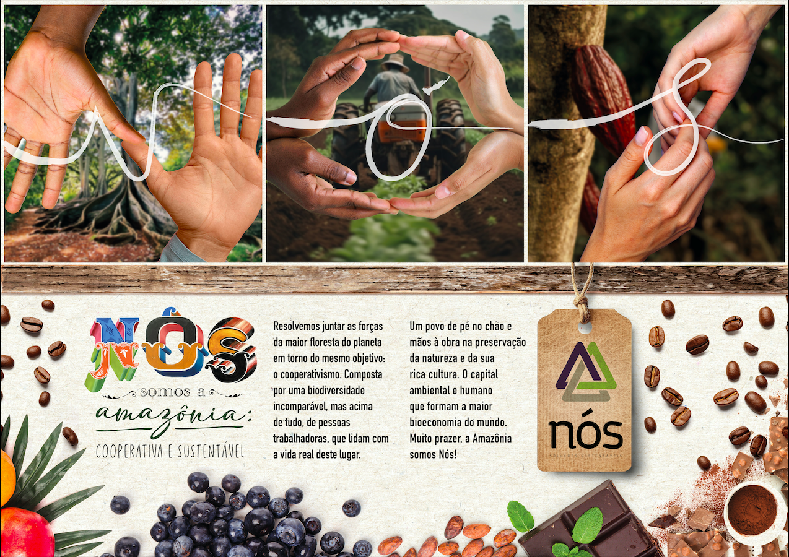
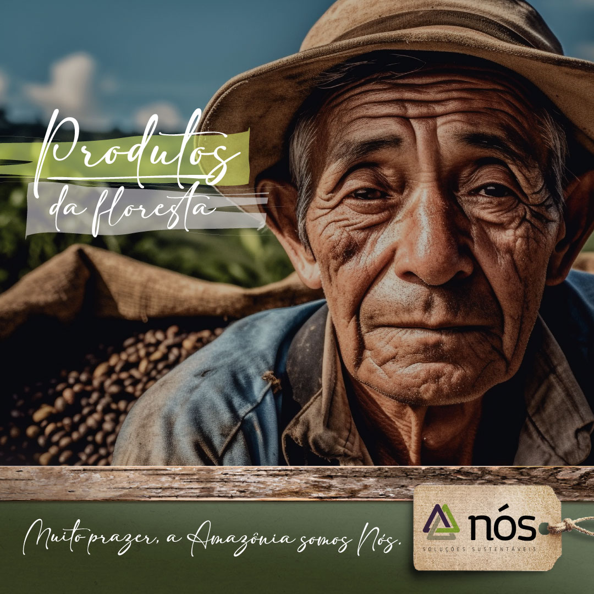
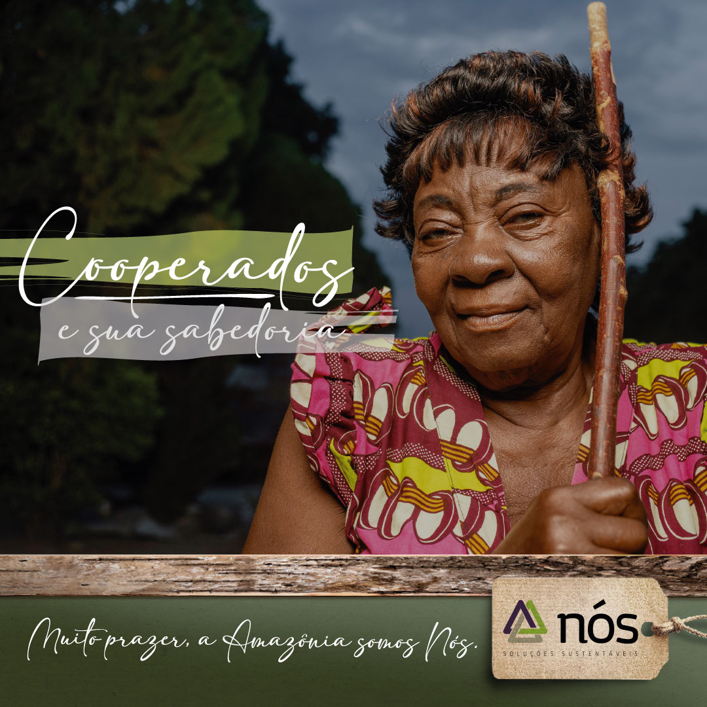
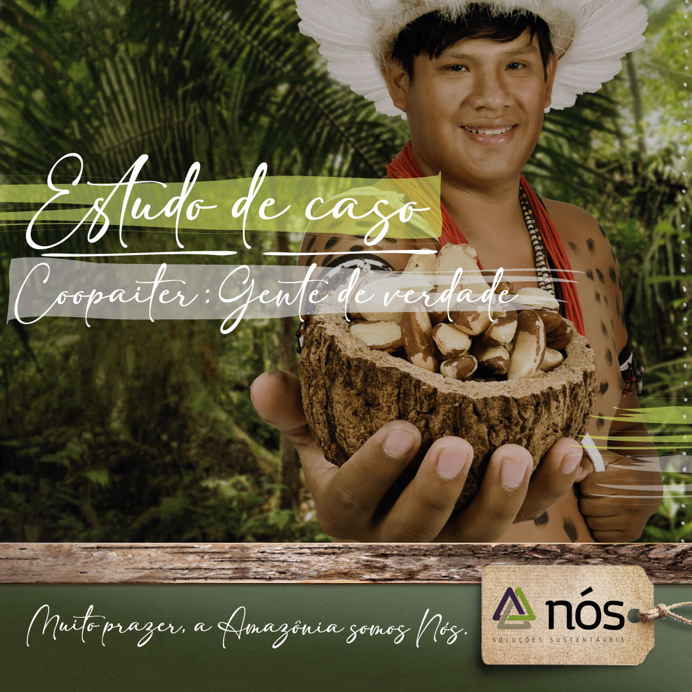
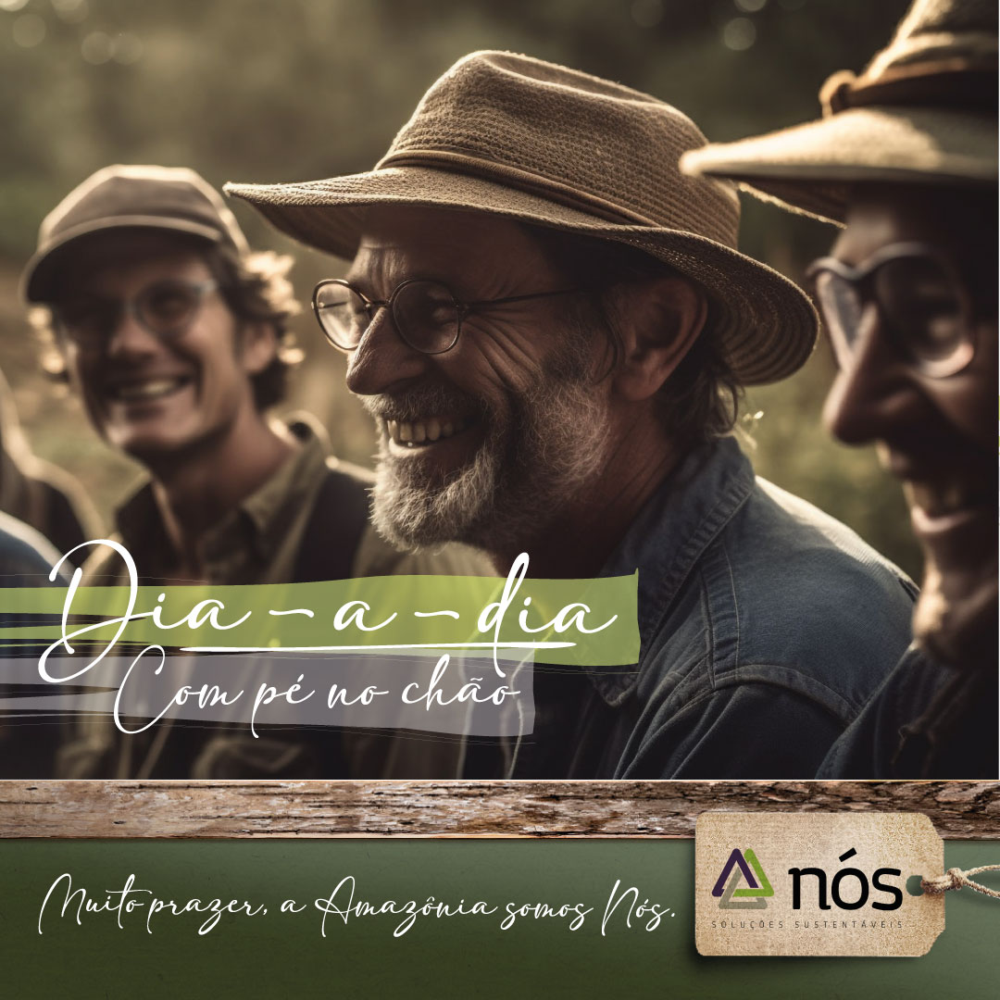
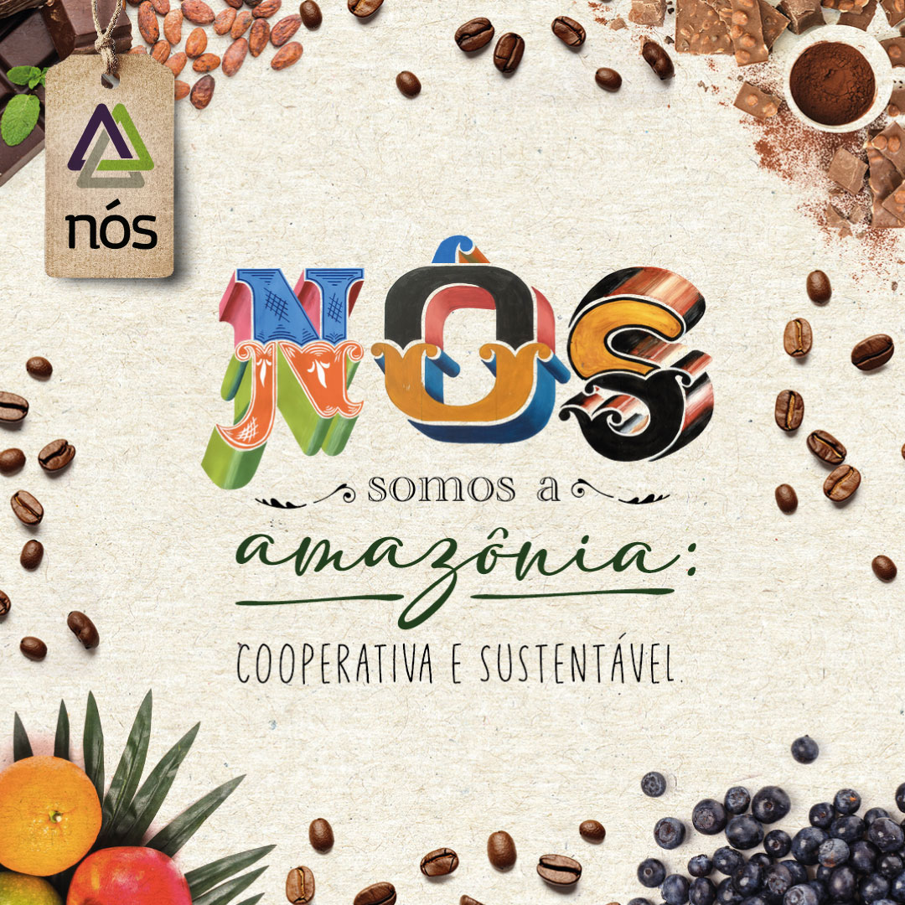
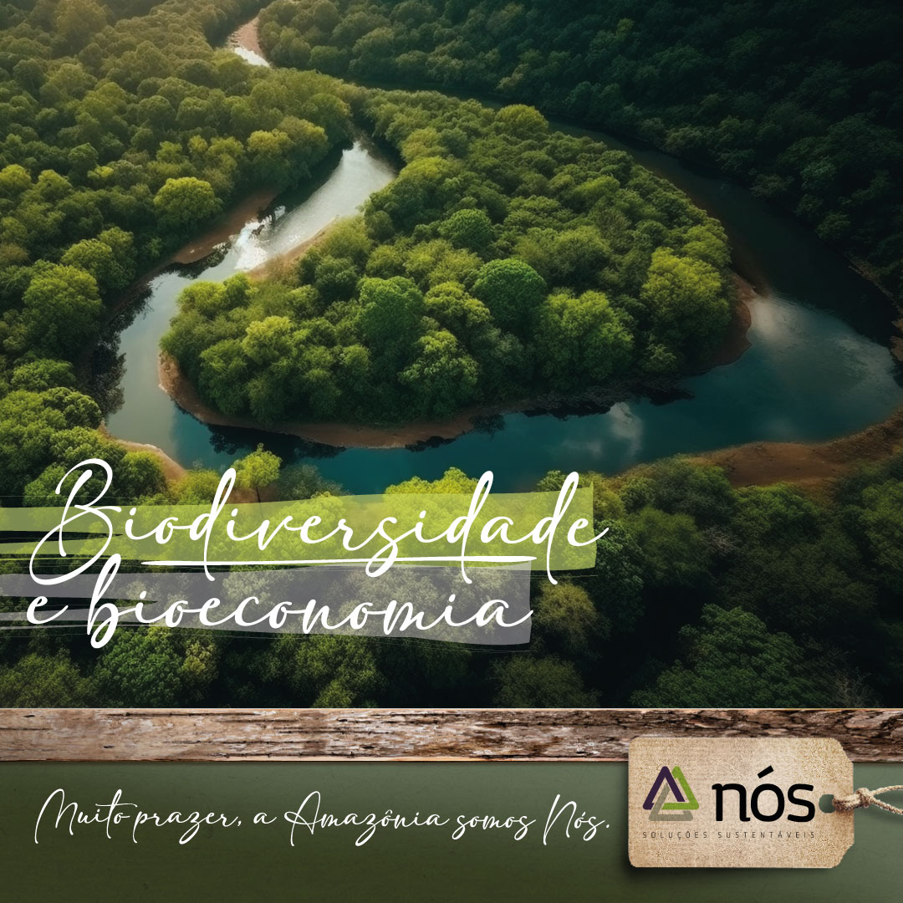
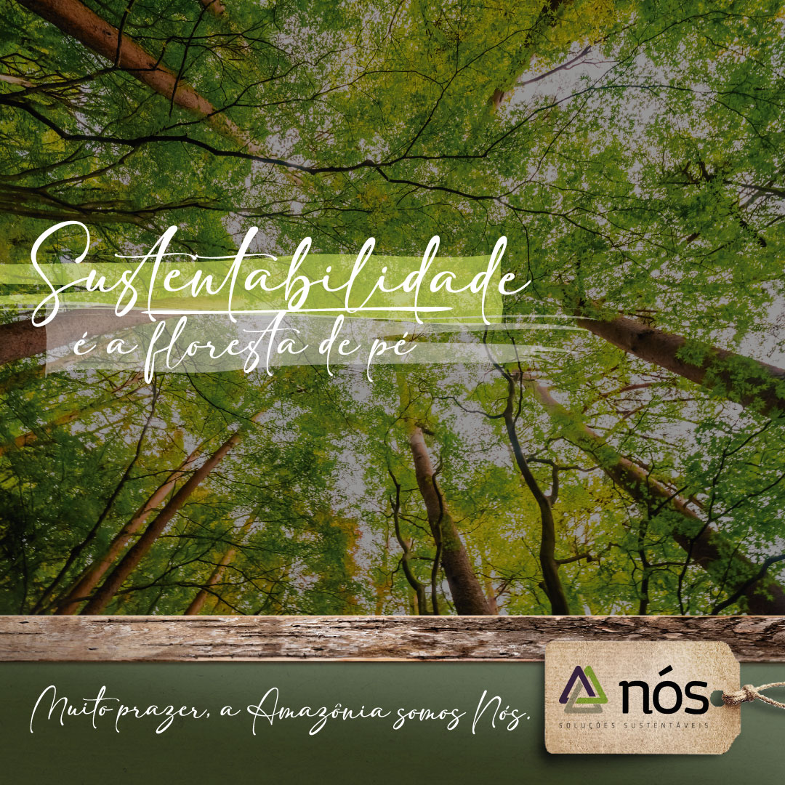
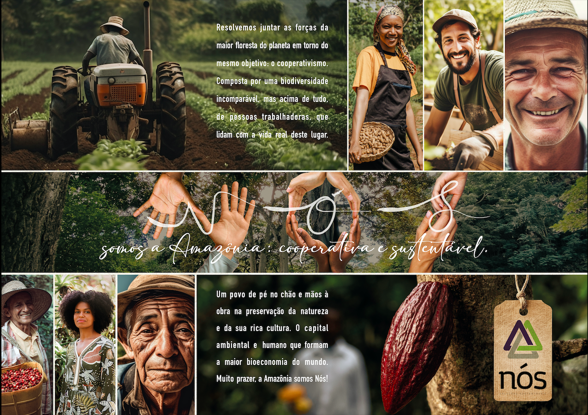

NÓS SOMOS
a amazônia

Nós Somos a Amazônia — Spread 01
NÓS_KEY_VISUAL // COOPERATIVA
Nós Somos a Amazônia — Filme Manifesto
PRODUÇÃO AUDIOVISUAL // FILME INSTITUCIONAL

Produtos da Floresta
SABER E VIVÊNCIA // BIOECONOMIA

Cooperados e sua Sabedoria
MATRIARCAS DA BIOECONOMIA

Estudo de Caso — Coopaiter
GENTE DE VERDADE // CASTANHA DA AMAZÔNIA

Dia-a-Dia
TRABALHO COLETIVO // CULTIVO SUSTENTÁVEL

Identidade de Marca
CRAFT CORPORATIVO // PRODUTOS COOPERATIVOS

Biodiversidade & Bioeconomia
SISTEMA VIVO DE PRESERVAÇÃO

Sustentabilidade
A FLORESTA DE PÉ // CARBONO NEUTRO

Nós Somos a Amazônia — Spread 02
PRESERVAÇÃO DO POVO E DA TERRA
Fim do Memorial de Impacto
VOLTAR AOS PROJETOS